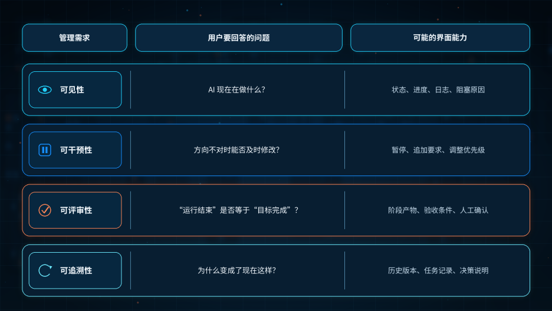
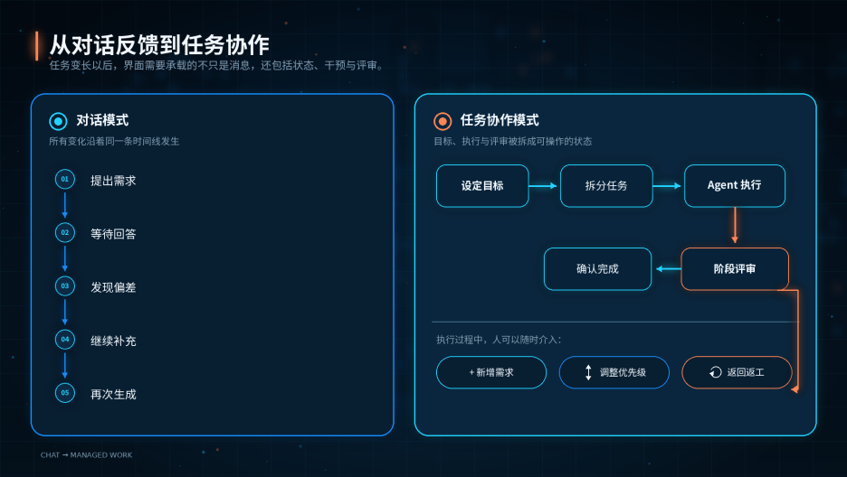
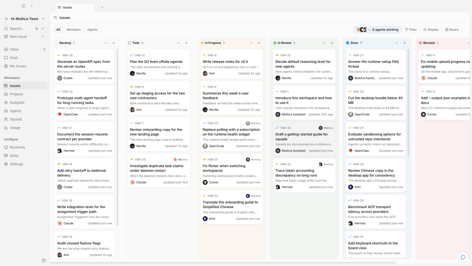
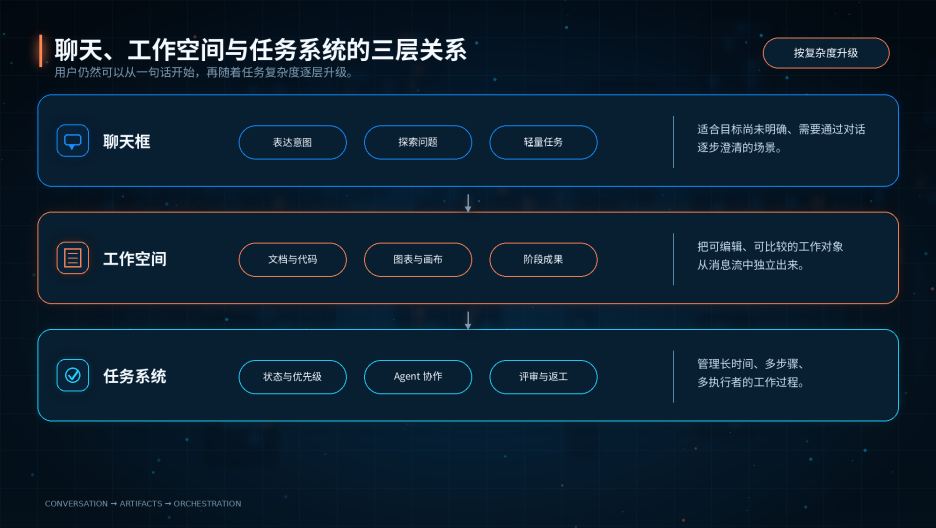

当AI从对话工具进化为持续执行任务的Agent，聊天框的局限逐渐显现。Multica等产品引入任务面板，将目标、执行与评审分离，让用户从提问者转变为管理者。本文探讨这一交互变革如何重塑人机协作的边界。
前几天，我刷到一段关于Codex 的视频。
画面里，常见的对话区旁边多了一块任务面板。任务被分成待处理、进行中和已完成，用户可以继续添加需求、调整优先级，查看AI 的执行进度；如果评审时发现结果不合格，还可以把任务拖回待处理，让它重新返工。
我当时的第一反应是：这不就是给AI 套了一个看板吗？
但再看一遍，我又觉得事情没有这么简单。过去我们使用AI，主要动作是“提问—等待—追问”。可当 AI 能够调用工具、修改文件、运行测试，甚至让多个 Agent 并行工作时，用户真正需要管理的，已经不只是一轮回答。
这里的Agent，可以先简单理解为：不只是生成内容，还能够围绕目标调用工具、执行多步任务，并根据结果继续调整的 AI。
我无法确认视频中的产品就是Multica，但它呈现出的交互方式，与我后来看到的开源项目Multica很相似：前者像是把任务面板嵌进Codex，后者则更进一步，把任务面板做成一个可以连接多种 Agent CLI 的独立协作平台。
这让我开始思考一个问题：当AI 开始持续工作，聊天框还够用吗？
01 聊天框让 AI 走向大众，也把任务装进了时间流
聊天框几乎是AI 产品最成功的一次交互简化。
用户不需要理解模型、工作流和参数，只要像和人交流一样描述问题，就能开始使用。对知识问答、文案润色、头脑风暴、简单分析来说，这种方式依然直接而高效。
但聊天框也有一个容易被忽略的前提：它把几乎所有信息都装进了一条按时间排列的消息流。
需求、补充说明、AI 的中间结果、工具日志、修改意见和最终答案，都沿着同一条时间线向下堆叠。任务简单时，这不是问题；任务复杂以后，用户就要自己在对话里记住：
- 最初的目标是什么；
- 哪些子任务已经完成；
- 哪一版结果被推翻了；
- 新需求应该插到哪里；
- 现在究竟是在执行、等待，还是已经失败。
聊天记录天然擅长保存“我们说过什么”，却不天然擅长表达“这项工作现在处于什么状态”。
这也是为什么，很多AI 产品在能力变复杂以后，都会从纯聊天框向外生长。比如 Claude 的 Artifacts 把文档、代码等成果放到对话旁边的独立区域，Claude Code 桌面端又进一步提供diff、终端、任务和子 Agent 等面板。它们没有取消聊天，而是开始把“沟通”与“工作对象”分开。Claude 官方文档也将Artifact 描述为对话旁边的独立工作区。
从这个角度看，任务面板的价值在于补足聊天框对结构化状态表达的不足。
02 当 AI 开始持续执行，用户管理的就不再是一次回答
过去，等待AI 的过程通常只有十几秒。用户可以盯着屏幕，结果不满意就继续追问。
但Agent 型产品正在拉长这个过程。它可能需要读取代码库、查询资料、调用多个工具、生成文件、运行测试，再根据错误修复。一次任务不再等于一次生成，而更像一个循环：计划、执行、观察结果、修复问题，然后继续。
OpenAI 对 Codex 长时任务的介绍里，就把这个过程概括为计划、编辑、运行工具、观察、修复和更新状态的反复循环。OpenAI 给出的一个实验案例持续了约 25 小时。这个数字不能代表普通任务都要运行一天，但它至少说明：AI 的交互单位正在从“消息”变成“过程”。
当过程变长，用户关心的问题也会变化：
- 它现在做到哪一步了？
- 是正常运行，还是卡在某个依赖上？
- 中途新增需求，会不会破坏已经完成的部分？
- 两个Agent 同时修改同一个对象时，谁来处理冲突？
- AI 说“完成”以后，谁来确认它真的达到了业务目标？
这时，聊天框里的“正在思考”就显得过于粗糙。它只告诉用户系统还没有结束，却没有告诉用户工作如何推进。
同样的变化也出现在多Agent 协作里。OpenAI 的Subagents 文档提到，多个子Agent 可以分别探索代码、运行测试和分析日志，主线程再汇总结果；但并行写入也可能带来冲突和额外协调成本。Agent 越多，管理问题不一定越少，反而可能更明显。
关于AI 能否完成更长任务，METR 提出的“任务完成时间跨度”也提供了一个观察角度：它用人类专家完成同类任务所需的时间，衡量模型在一定成功率下可以处理多长的任务。不过，METR 也明确提醒，这一指标主要来自软件、机器学习和网络安全任务，而且更长时段的估计仍有较大不确定性。它不能直接推导出“AI 已经可以独立承担所有长期工作”，但能帮助我们理解为什么产品界面开始关心持续执行、阶段检查和中途接管。
03 任务面板：自动化之外的可管理性
看到任务面板时，很容易把它和“AI 自动干活”画上等号。但我认为，这两个概念需要分开。
- 自动化来自Agent 的执行能力：能否理解目标、调用工具、保留上下文、处理异常并继续完成任务。
- 任务面板提供的是管理能力：让用户看见任务、调整顺序、介入过程、确认结果。
一个只有看板、没有可靠Agent 的产品，只是把失败过程展示得更整齐；一个能力很强、却没有状态管理的 Agent，也可能让用户在漫长等待中失去控制感。
任务面板补上的，至少有四类需求：

用户的角色也随之改变。
在传统聊天里，用户既是提问者，也是不断补充提示词的人；到了任务协作界面，用户更像目标设定者、优先级判断者和结果评审者。AI 负责更多执行，用户把精力放在边界、取舍和验收上。用户不必因此变成项目经理。好的产品应该把复杂的调度藏在系统内部，只把需要人决定的节点交出来。否则，所谓“人机协作”很容易变成用户每天给一群 AI 开站会。

04 Multica：当任务面板成为多 Agent 的协调层
为了理解这类产品到底在解决什么问题，我继续看了Multica 的公开仓库和文档。这里需要说明：下面的分析主要基于开源项目资料，并不是一次完整的长期实测。
Multica 把自己定位为一个可自托管的 Agent 工作空间。它本身不提供模型，而是连接 Codex、Claude Code、Cursor、Copilot、Kimi 等多种 Agent CLI，让用户在同一个系统里创建任务、分配 Agent、查看执行过程并进行评审。截至 2026 年 8 月，项目README列出了20 种可连接的 Agent 工具。以下是Multica 的多 Agent 任务看板。

如果只看截图，它很像常见的研发看板。但顺着文档往下看，会发现它做了几个很关键的产品拆分。
Issue 是持续目标，Task 是一次执行
在Multica 里，Issue 是持续存在的工作目标，包含讨论、上下文和最终状态；Task 则是某个 Agent 的一次具体运行。同一个 Issue 可以经历多次 Task，失败、重试和返工记录不会被后一次运行覆盖。Tasks 文档还特别强调：Task 显示 completed，只代表这次运行正常结束，并不等于 Issue 的目标已经达成。
这个设计很重要，因为AI 产品里最容易混淆的，正是“模型停止输出”“工具执行成功”和“业务任务完成”这三件事。把它们混成一个绿色对勾，界面会很清爽，但风险也会一起被藏起来。
Agent 必须被明确触发
按照Multica 的工作机制说明，Agent 不会因为看见任务就自动开始，通常需要分配、@ 提及、直接对话或 Autopilot 等触发方式。定时和 Webhook 自动化负责“何时触发”，Agent 负责“如何执行”，任务系统则负责记录和协调。
在这里，看板承担的是连接目标、执行和评审的控制工作。
多 Agent 需要协调，而不是同时叫醒所有模型
Multica 的 Squad 机制会先唤起一个 leader Agent，由它读取任务和团队配置，再决定是否把子任务分给其他成员。文档也明确说明，Squad 不会自动提高并发度，更不保证多个 Agent 的结果天然一致。Squads 文档里，最终把Issue 标记为 done 的权力仍留给人或外部集成。
在我看来，Multica 展示出一套更接近真实工作的状态模型：一个目标可以对应多次执行；一次执行可以失败或重试；Agent 完成运行后还需要评审；多 Agent 之间需要明确的分工和交接。它比看板的视觉样式更值得讨论。
它把过去散落在聊天记录里的隐性过程，变成了可以被观察和操作的对象。
05 看板能让工作更透明，却不能自动让结果更可靠
说到这里，似乎很容易得出结论：聊天框会被任务面板取代。
但我并不认同。
进度可见，不等于进度可理解
如果面板里有几十张任务卡、多个Agent 状态和持续滚动的日志，用户可能只是从“翻聊天记录”变成“盯仪表盘”。状态越多，认知负担也越高。产品如果不能提炼真正的异常、风险和待决策事项，透明度就可能变成一种界面噪音。
状态清楚，也可能制造错误的确定感
Multica 的文档专门区分 Task completed 与 Issue done，正是因为系统状态和业务结果并不相同。AI 可以顺利运行完，却理解错目标；也可以输出一份看起来完整的报告，却引用了错误资料。看板能记录“过程发生了什么”，但不能替代验收标准、测试机制和人的判断。
多Agent 会增加协调成本
把任务拆给多个Agent，会增加通信、上下文同步、结果合并和冲突处理成本。对于高度耦合的任务，并行可能反而让工作变慢。OpenAI 的 Subagents 文档也建议，对探索、测试、梳理这类读多写少的工作更适合并行；多个 Agent 同时改代码时则要更谨慎。
研发场景不能代表所有AI 工作
代码任务有仓库、分支、diff、测试和构建结果，天然比较容易形成可观察的状态。换成产品策略、品牌创意或组织沟通，“完成”的定义往往更模糊，任务之间也未必能被整齐拆开。我们不能因为一个研发看板有效，就直接推断所有 AI 工作都应该看板化。
所以，任务面板解决的是协调问题，不是智能问题；它能降低失控感，却不会凭空提高模型能力。
06 聊天、工作空间和任务系统可能会长期共存
AI 产品未来可能形成三个彼此连接的层次，让聊天框和任务面板分别处理不同复杂度的工作。

聊天、工作空间与任务系统的三层关系
第一层仍然是聊天，用来表达意图、探索问题和处理轻量任务。
很多时候，用户自己也没有想清楚要什么。通过对话逐渐澄清目标，是聊天框的重要价值。过早要求用户创建项目、填写字段和拆分任务，只会提高使用门槛。
第二层是工作空间，用来承载文档、代码、图表和阶段成果。
当内容需要反复编辑、比较版本或直接操作时，它不应该一直埋在消息里。Artifacts、代码 diff 和可编辑画布都属于这一层。
第三层是任务系统，用来管理长时间、多步骤和多Agent 的执行过程。
它关心的是状态、优先级、依赖关系、异常、评审和返工，而不是每一句对话。
从产品设计角度看，我更期待一种“按复杂度升级”的交互：用户可以始终从一句话开始；当系统识别到任务需要较长时间、多个交付物、外部工具或并行 Agent 时，再建议把它升级为可管理的任务。执行结束后，结果回到工作空间接受评审，必要时再从具体阶段返工。
这比一开始就把完整项目管理系统摆在用户面前更自然，也比把所有过程压进一条聊天记录更可靠。
当然，这里还有一些没有答案的问题：由系统自动判断何时切换，会不会让用户失去预期？如果完全交给用户选择，新手是否知道什么时候该升级？任务面板应该展示多少过程，才能既建立信任，又不过度暴露技术细节？
这些问题决定了任务面板究竟会成为AI 产品的基础能力，还是只属于专业用户的高级模式。
结语
聊天框的成功，在于它把复杂技术藏进一次自然对话；任务面板的价值，则可能在于AI 开始持续执行以后，把必要的过程重新展示给用户。
两者看起来方向相反，其实都在解决同一个问题：用户应该以多大的成本，获得对AI 的理解和控制。
对简单问题，最好的界面也许依然只有一个输入框。对复杂项目，用户需要的可能是一套能够看见进度、调整方向、评审结果和追溯过程的工作系统。
因此，我暂时不愿意把任务面板称为“下一代 AI 产品的标准答案”。但 Multica 以及 Codex、Claude Code 里不断增多的任务、评审和后台运行能力，至少释放了一个清晰信号：当 AI 的工作时间变长、执行步骤变多、参与者从一个变成多个时，聊天框之外开始需要新的管理界面。
真正值得继续观察的，或许不是“看板会不会取代聊天”，而是 AI 产品能不能在不增加过多负担的前提下，让用户自然地从对话走向协作。
如果有一天，你只需要说出目标，系统便自动判断哪些事情留在聊天里、哪些进入工作空间、哪些拆成任务交给多个Agent——那时，我们使用的可能就不再是一个更聪明的聊天机器人，而是一种新的工作界面。